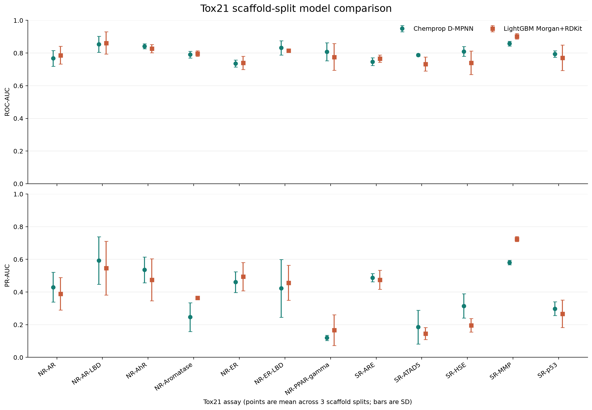
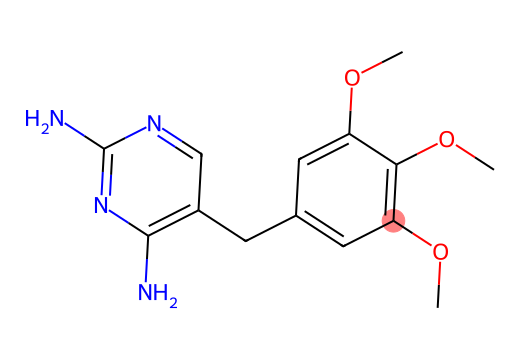

Tox21 Toxicity Modeling
Independent machine-learning project, 2026

Tox21 contains 12 nuclear-receptor and stress-response assays, with many labels unmeasured. This project builds a leakage-aware benchmark for predicting assay activity from molecular structure and asks how performance holds when test compounds belong to scaffold groups held out from training.
I implemented LightGBM baselines using Morgan fingerprints and RDKit descriptors, then trained a multitask Chemprop directed message-passing neural network. Missing assay values remain missing rather than being treated as inactive. Results are compared per assay across three scaffold partitions.
Across three scaffold splits, macro ROC-AUC was 0.802 +/- 0.022 for Chemprop and 0.793 +/- 0.021 for LightGBM. Macro PR-AUC was 0.390 +/- 0.045 and 0.392 +/- 0.024, respectively. These close averages do not establish a clear overall winner.
Results Explained
Both models found useful patterns between a molecule's structure and its results in the Tox21 screening tests. A ROC-AUC near 0.8 means that, for a randomly chosen active and inactive pair, the model usually gives the active molecule the higher score. It does not mean 80% of predictions are correct.
The test set held out whole groups of related chemical structures. That makes this a tougher, more practical test of whether a model can recognize patterns in less familiar molecules, rather than simply recognizing close copies of compounds it saw during training.
The models performed similarly overall, and neither was best on every assay. For one assay, NR-AhR, using a representation learned from a larger collection of molecules improved the scores on one held-out split. That result is promising, but it needs to be checked on more splits.
Why it matters: models like these could help prioritize chemicals for follow-up testing. They are research screening tools, not proof that a chemical is safe or harmful, and they do not replace laboratory testing.
Approach
- Parse and standardize SMILES, preserving missing assay labels.
- Create random and Bemis-Murcko scaffold train/validation/test splits.
- Benchmark Morgan fingerprints, RDKit descriptors, and their combination with per-assay LightGBM models.
- Train a multitask Chemprop D-MPNN on each scaffold split and compare per-assay ROC-AUC and PR-AUC.
- Use SHAP to inspect descriptor and Morgan-feature models; inspect fingerprint-bit examples for collisions.
- Run a first validation-calibration and Tanimoto-similarity check for the NR-AhR LightGBM model.
What the results say
- Random-split scores are generally higher than scaffold-split scores, so evaluation strategy changes apparent performance.
- The two model families have similar average scaffold-split results, but their relative performance varies by assay.
- PR-AUC needs to be read beside assay prevalence because positives are uncommon for several endpoints.
- SHAP ranks features used by a fitted model; it does not establish that those molecular properties cause assay activity.
- The top combined-model Morgan bit has varied sampled environments, a reminder that hashed fingerprint bits are not unique chemical fragments.
- For NR-AhR on scaffold seed 0, LightGBM on frozen CheMeleon embeddings reached ROC-AUC 0.846 and PR-AUC 0.689; this is one split and needs replication.

Current scope
The LightGBM benchmark, NR-AhR Morgan-bit examples, calibration/applicability check, and seed-0 frozen CheMeleon embedding evaluation are complete. Five of nine controlled Chemprop split/initialization runs have predictions; four combinations remain. CheMeleon fine-tuning was stopped during epoch 2 after about 46 minutes on CPU and has no final test metrics. The detailed report distinguishes measured results from pending analyses.